RATIG
Galeri Antarmuka Aplikasi — Sistem Pemeriksaan Kelelahan Berbasis Waktu Reaksi
Android · Jetpack Compose · Material 3 · Offline-First
Dokumentasi UI
Alur Masuk
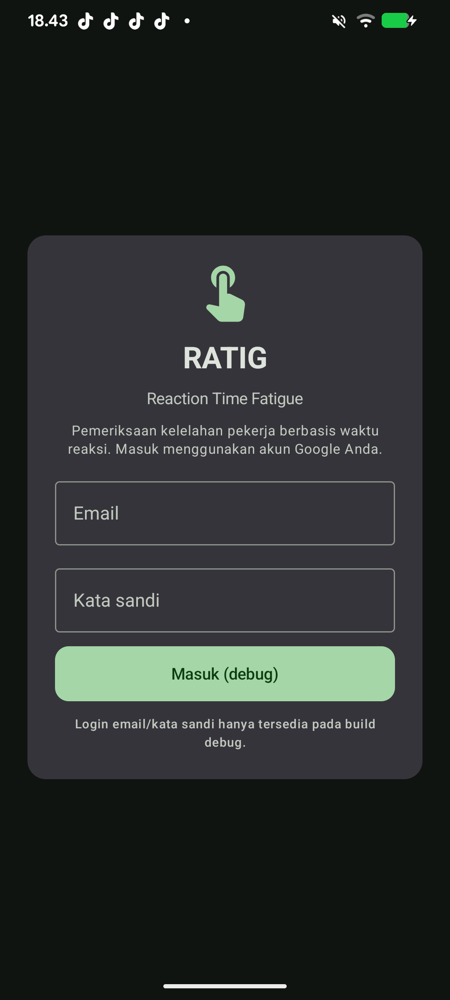
Layar Masuk
Masuk dengan akun Google. Pada build debug tersedia login email/kata sandi untuk pengujian.
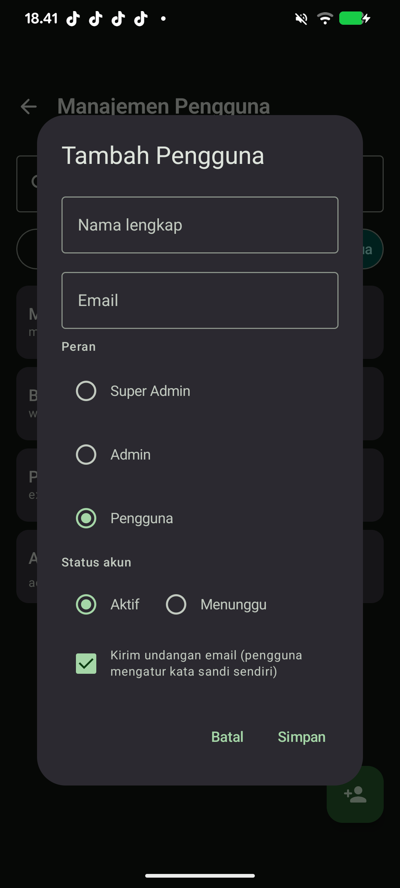
Super Admin
Tambah Pengguna
Super Admin/Admin menambah akun: nama, email, peran, status, dan opsi undangan email.
Super Admin
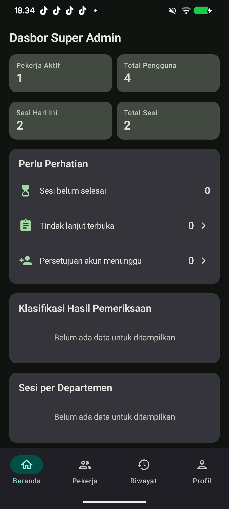
Super Admin
Dasbor Super Admin
Ringkasan pekerja aktif, total pengguna, sesi, dan hal yang perlu perhatian.
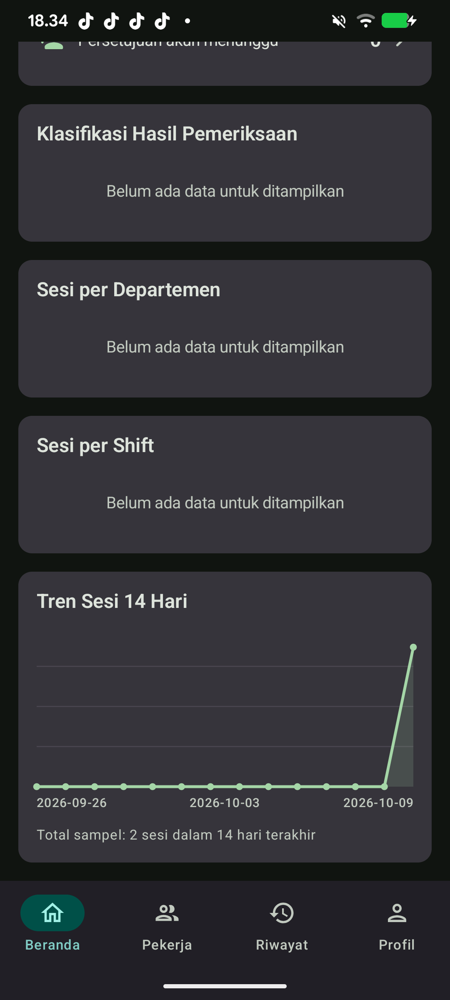
Dasbor (lanjutan)
Klasifikasi hasil, sesi per departemen, sesi per shift, dan tren harian.
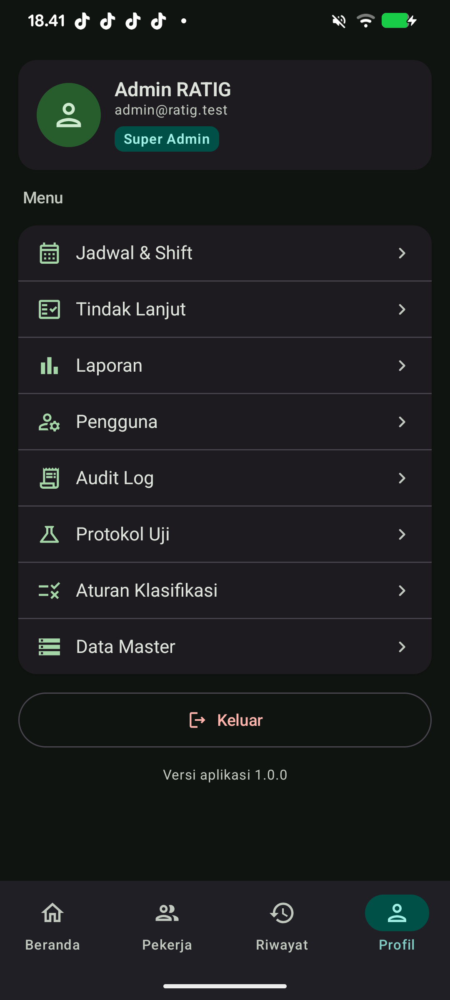
Profil Super Admin
Menu lengkap: Pengguna, Audit Log, Protokol, Aturan Klasifikasi, Data Master.
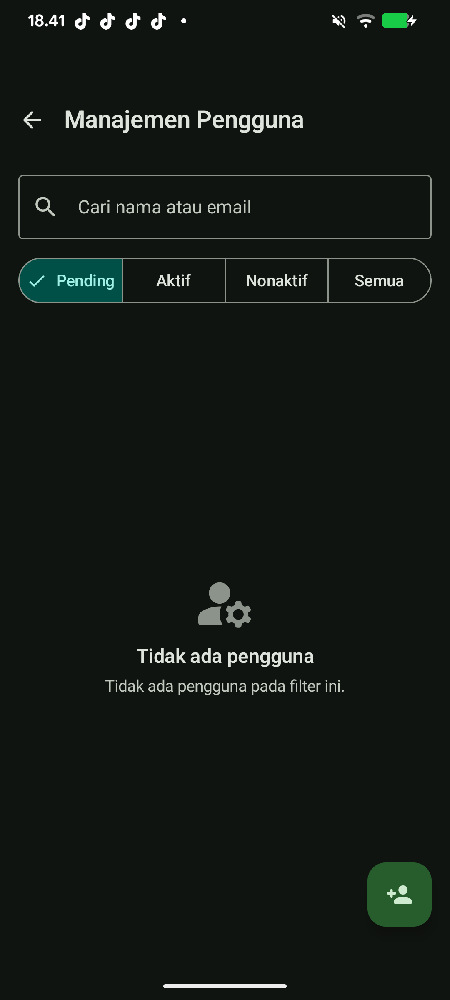
Manajemen Pengguna
Filter per status akun, pencarian, tombol (+) untuk menambah pengguna.
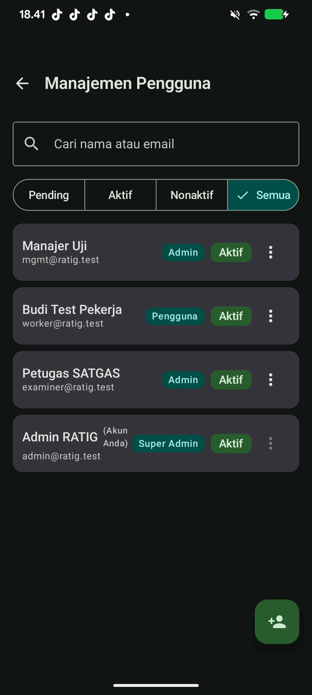
Daftar Pengguna (Semua)
Tiga peran ditampilkan jelas: Super Admin, Admin, dan Pengguna beserta status akunnya.
Operasional Pemeriksaan
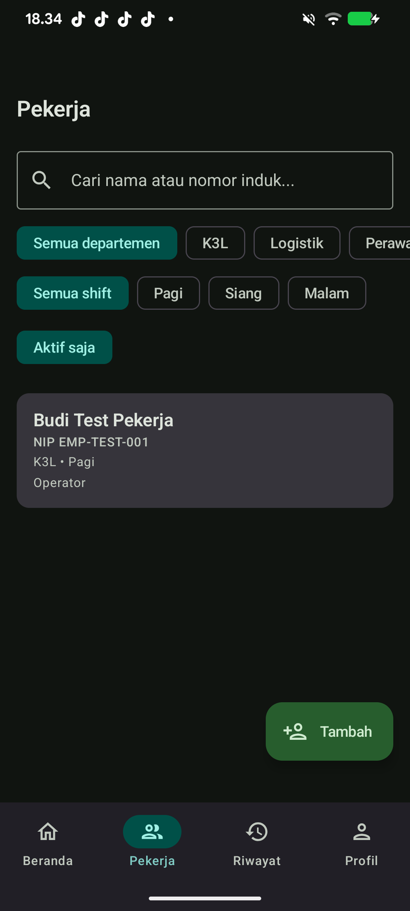
Semua Peran
Daftar Pekerja
Pencarian, filter departemen/shift, dan status aktif pekerja.
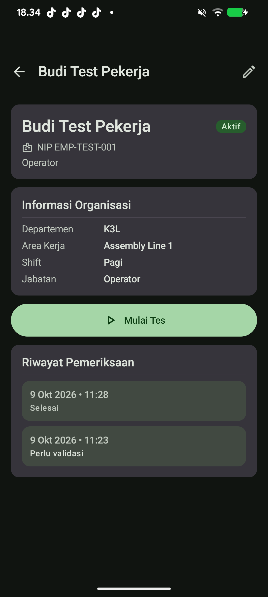
Detail Pekerja
Informasi organisasi, tombol Mulai Tes, dan riwayat pemeriksaan pekerja.
Detail Pekerja (lanjutan)
Riwayat sesi beserta status dan kategori hasil.
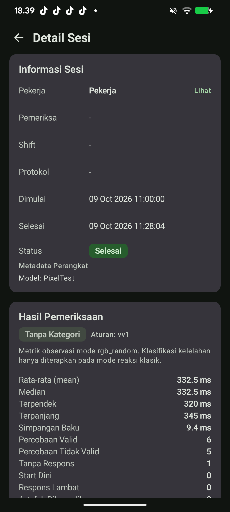
Detail Sesi
Informasi sesi, metadata perangkat, dan hasil pemeriksaan.
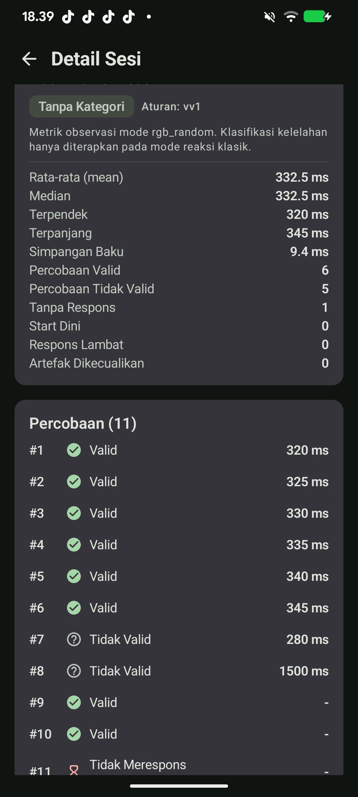
Rincian Percobaan (Trial)
Setiap percobaan dicatat: valid/tidak valid, waktu reaksi (ms), dan status respons.
Analitik & Administrasi
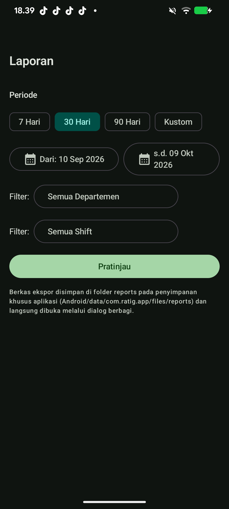
Admin
Laporan & Ekspor
Pilih periode, filter departemen/shift, lalu ekspor (CSV) untuk manajemen.
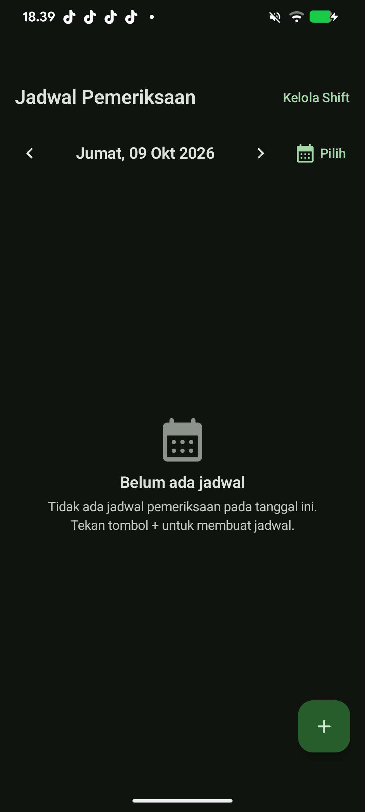
Jadwal Pemeriksaan
Penjadwalan pemeriksaan per tanggal dan pengelolaan shift.
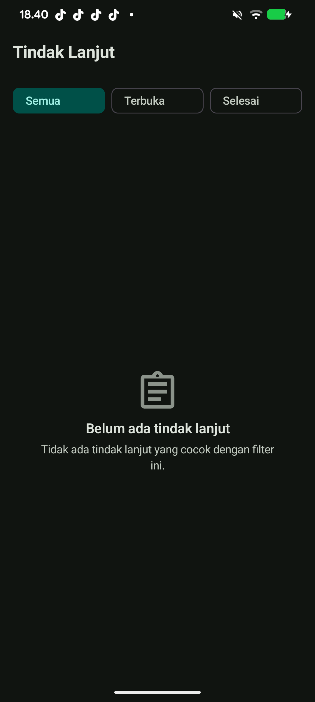
Tindak Lanjut
Daftar tindak lanjut hasil pemeriksaan dengan filter status.
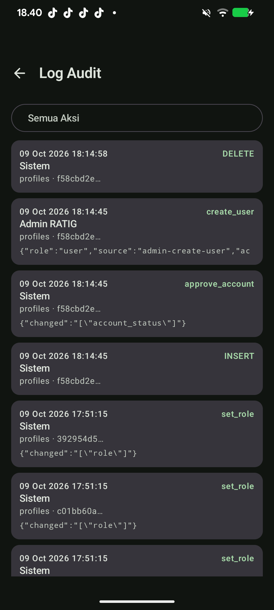
Super Admin
Audit Log
Jejak audit seluruh tindakan penting (mis. create_user, approve_account).
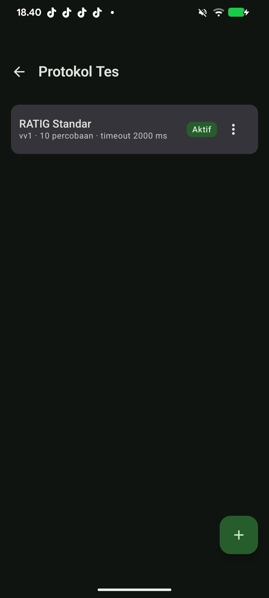
Super Admin
Protokol Uji
Daftar protokol pemeriksaan beserta versi dan statusnya.
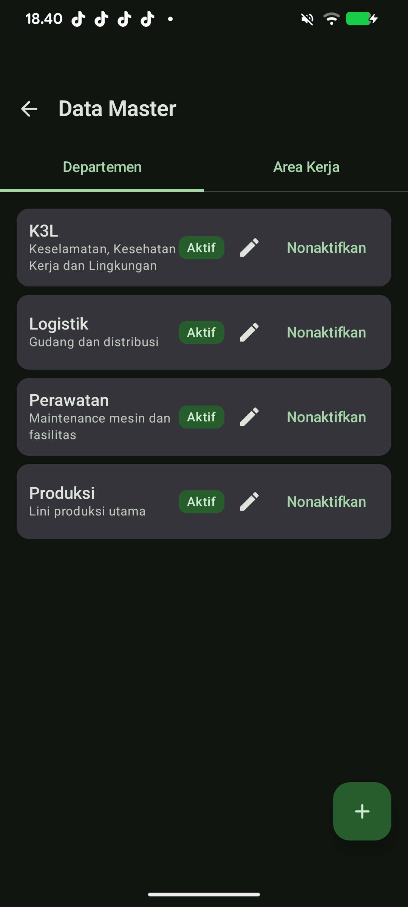
Super Admin
Data Master
Pengelolaan departemen, area kerja, dan shift.
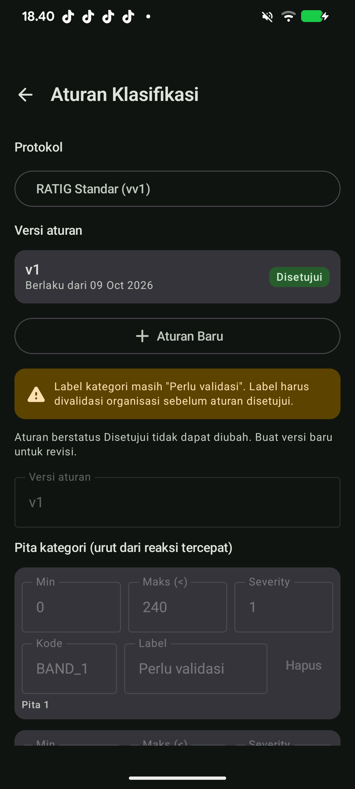
Super Admin
Aturan Klasifikasi
Ambang batas kategori kelelahan yang dapat divalidasi perusahaan (versi terpisah).
Pengalaman Pengguna (User)
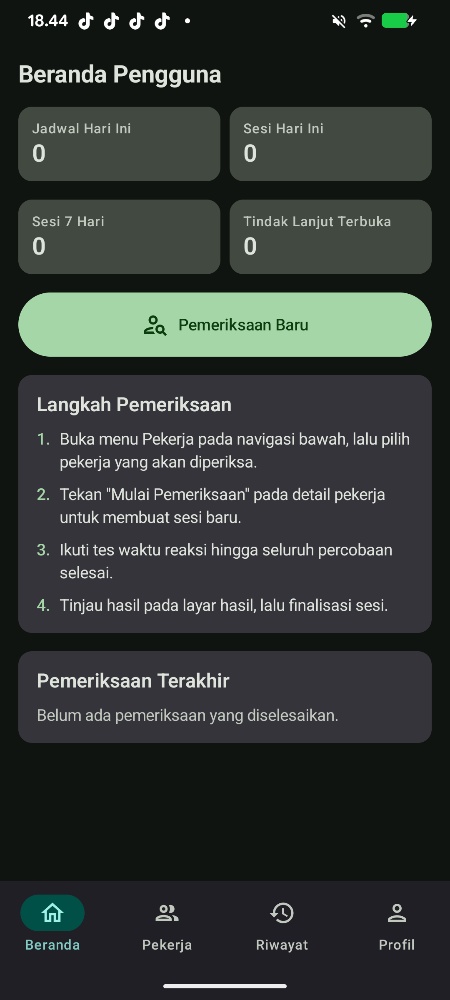
Pengguna
Beranda Pengguna
Ringkasan sesi pribadi dan panduan langkah pemeriksaan.
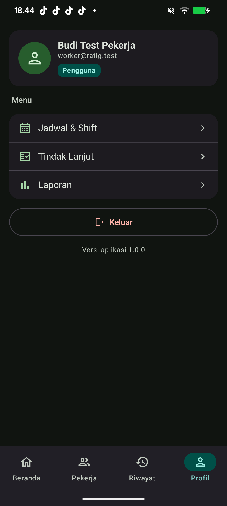
Pengguna
Profil Pengguna
Menu lebih ringkas: hanya fungsi yang relevan untuk peran Pengguna.